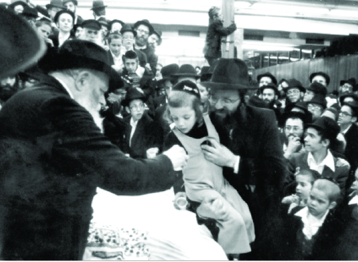

A Life of Torah and Chassidus
A glimpse into the life of a lamdan and Chassid with extraordinary middos, R’ Eliezer Perlstein. * Presented to mark his passing on 8 Cheshvan 5748.
By his son-in-law, Rabbi Yosef Avrohom Pizem

“I WON’T FIND BETTER THAN MY LAZER”
My father-in-law was from one of the old time Yerushalmi families; he was born in 5696/1936. His father was R’ Naftali Tzvi Perlstein, one of the illustrious characters of Yerushalayim of old. His family can trace its lineage to R’ Yoel Sirkis, the Bach, and to R’ Yitzchok Abarbanel.
He lost his mother, Esther Leah, at an early age, and his father passed away shortly after seeing him marry.
He was a serious bachur who studied Torah in the Tiferes Tziyon Yeshiva in B’nei Brak and then in Toras Emes in Yerushalayim. He absorbed Torah and Chassidus and stood out for his diligence, his good head, and his fine character.
He was one of the close talmidim of the mashpia R’ Shaul Brook, and he spoke longingly of those inspiring farbrengens.
While still a bachur, R’ Moshe Weber, the mashpia in Toras Emes with whom he was very close, chose him to be the chazan on the Yomim Nora’im in the yeshiva. This was so even though he usually picked someone who was married and had children. R’ Weber said, “I won’t find anyone better than my Lazer.”
Typical is the personal story of R’ Aharon Tenenbaum of Kfar Chabad who visited Toras Emes in his youth. He was unsure of what his path in life was, and his decision to join a Chassidishe yeshiva resulted from hearing the warm davening of the bachur Eliezer Perlstein. He figured that a place where one was educated to daven in so special a manner was the place for him.
Lazer was musically gifted and he knew old soulful Chabad niggunim, which he sang with great exactitude. He earned the title of “Baal Menagen.” When R’ Shmuel Zalmanov edited the Chabad Seifer HaNiggunim, he would record him and use these recordings to write down the notes of the niggunim he included in the book.
LIVING ENCYCLOPEDIA
After marrying his wife Penina, he continued to learn for another five years under straitened circumstances. It was only when the financial situation became unbearable that he had to leave learning and look for a way to support the family while establishing set times to learn Torah.
An opportunity became available to him to work under the Chief Rabbinate, which consisted of R’ Herzog and R’ Nissim at the time. From that point, he filled many important roles with great devotion, holding the official title of “Assistant General Secretary of the Chief Rabbinate of Israel” and did so for about twenty-five years. He did a lot to help rabbanim and b’nei Torah. Many people, along with their k’hillos, owe him gratitude for everything he did on their behalf.
R’ Mordechai Eliyahu said that over the years, the rabbanim did not stop expressing their sorrow over the great loss after his passing. “He would expedite matters and problem-solve swiftly and efficiently,” they would say each time.
Even when he was sick and writhing in pain, he would use his connections on behalf of those who turned to him for his help.
R’ Eli Ben-Dahan, chairman of the official rabbinic court system, said about him, “He was a living encyclopedia of the Chief Rabbinate. On every subject he was the one who knew what the policy of the Chief Rabbinate was, throughout the years, and we consulted with him on everything.”
DISSEMINATOR OF TORAH AND SHLIACH TZIBBUR
He was great in Torah, avoda, and g’milus chassadim.
Those who knew him for years and learned with him in yeshiva, or those who attended the shiurim he gave, will testify about him. Although he knew how to conceal his knowledge and downplay his scholarship, people knew he was a talmid chacham.
Throughout the years, he had set times to learn Nigleh and Chassidus. He gave shiurim to balabatim in Nigleh and Chassidus. He founded the “Beis Midrash L’T’filla u’L’Torah – L’Chassidus Chabad” in Kiryat Mattesdorf in Yerushalayim and served as the director of the beis midrash and the regular baal t’filla.
In the shiurim that he gave, he taught the difficult tractates of Nazir, K’subos, and Yevamos in depth and with clarity. People wondered how someone who was so busy with important work in the Chief Rabbinate and with communal work could find the time and peace of mind to swim in the sea of the Talmud and draw up pearls from the Rishonim and Acharonim and convey them so that even a child could understand.
CHASSIDIC HUMILITY
He was a role model of chesed. If someone needed an urgent loan and approached him, he would try to fulfill the request quickly, from his own pocket and from other sources. It was all done graciously and joyously.
It was only after his passing, when people came to report what they owed the family, that it turned out that whatever was known about him in his lifetime about his chesed was only a drop in the bucket. And all this was done without any fanfare, far away from the spotlight.
His good friend, R’ Naftali Roth, rav of the beis midrash that he davened in, said that when my father-in-law saw that there was nobody to clean the beis midrash on Motzaei Shabbos, he would clean the floor himself. Even when they pointed out to him that this was unfitting for any learned person, certainly not someone like himself, he ignored them since he was a humble man.
R’ Roth said, “I knew him well and I think that this is not simply a case of rare humility, but something from which we can learn; to what extent one must feel a sense of responsibility. He did not try to see who was at fault and who had been remiss. All he considered was: it possible that a person would want to use the place and would be unable to do so? Then he took action and did so naturally, as though he hadn’t done anything unusual.”
LOYAL CHASSID
During the early years of the Rebbe’s nesius, he would write to the Rebbe often and receive many letters of guidance and blessing, some of which are printed in the Igros Kodesh.
After he married, he hosted farbrengens for Anash and his home was where the Rebbe’s sichos were printed for distribution. The sichos were typed up by his wife and copies were made with a stencil. Anash and the T’mimim grabbed them up eagerly.
My father-in-law told me what pulled him in his first yechidus with the Rebbe. He said, “The way it usually works is that sincerity, emuna, and d’veikus in every detail in Kitzur Shulchan Aruch etc. is usually more manifest in childhood. Afterward, when a person becomes more knowledgeable, he differentiates between more and less serious matters, between Hiddur and L’chat’chilla, B’dieved and Yeish Matirin.
“However, in my first yechidus, I was very impressed that in the Rebbe, with all his tremendous genius that bespeaks intellectualism, there shone forth unadulterated and powerful emuna in every little detail of halacha, minhag, or maamer Chazal, with the pure faith of a school boy. That’s what’s grabbed me.”
As a loyal Chassid, he was completely mekushar to the Rebbe and took part in the mivtzaim. Fifty years ago he was one of the first to “spread the wellsprings outward,” being amongst the founders of Tzeirei Agudas Chabad in Yerushalayim, along with his friend R’ Tuvia Blau and other distinguished young men.
When Chief Rabbis Shapiro and Mordechai Eliyahu visited the Rebbe, the Rebbe asked them to hold public s’darim all over the country and even gave them money to fund this. I remember the exhilaration of holiness with which he attended to the fulfillment of the Rebbe’s request, and what joy one could see on his face when the rabbanim gave him this project to organize. He felt it was his good fortune that this fell into his lap.
He often went to see the Rebbe and we could see the radiance on his face when he came back and told what he had seen and heard in Beis Chayeinu. This had a great influence on many others from all backgrounds.
On the final Motzaei Pesach of his life, after he silently suffered terribly throughout Chol HaMoed and the months prior and he knew he was stricken with a terminal illness, he still had youthful energy. With supreme effort he overcame his pain and tried to hide it and helped set up for Pesach etc. Despite his weakness, pain and the late hour, he joyfully went off to participate in founding a daily Rambam shiur, as the Rebbe said to do. For some reason, it was decided to start the shiur that night.
A FULL LIFE
My father-in-law was gifted with the ability to understand people. He was refined, patient, and wise. In his modesty, he stayed away from publicity and was outstanding in his simplicity and natural Chassidic humility.
His ability to work on many fronts simultaneously and to do so determinedly and responsibly came from two basic aspects of his personality. One was that he was incredibly organized. He loved order. Two, he used every minute. There was no such thing as wasting time. Every minute of the day was utilized so that even though he did not live long, the days he lived were productive and used to their maximum.
Despite his insistence to use every moment, when it came to interacting with other people he was pleasant and social and he always knew how to set people at ease and cheer them up. He knew how to provide encouragement and the fortitude to endure sorrows and pain with a sober outlook to the future, and many people asked him for advice. His friends described him as someone who stood strong, with both feet on the ground, for his wisdom, deliberateness, and straight-thinking.
For many years and until his final day, he was also the manager of the weekly Yiddish publication Der Yiddishe Shtral and he did a lot to keep it going and expand it. The editor-in-chief of the publication, R’ Gedalya Segal, eulogized my father-in-law in the magazine and wrote sadly that it was a tremendous loss to the weekly and its many readers.
ACCEPTING SUFFERING WITH LOVE
His childhood friends say that he did not complain about his painful situation and he accepted his suffering with pure faith that everything G-d does is for the good, for “no evil descends from on high.” He was realistic and well aware of his terminal condition. He kept his feelings to himself, since he did not want to cause pain to his family members or to the hundreds of people who visited him.
His emuna and bitachon in difficult times serve as a model to others about how to accept everything with love and justify the Heavenly judgment. He valiantly fought his illness and pushed himself to attend shul with the last of his strength.
THE REBBE WAS RIGHT
My brother-in-law Menachem Perlstein told the following story in Sippurim al HaRebbe M’Lubavitch:
When my father was in Hadassah hospital in Yerushalayim, the doctors performed various tests and said his liver was very swollen. They made us very worried and we immediately sent a fax to the Rebbe. The Rebbe circled the words “all the tests” and wrote one word: “exaggerated.” He added that the t’fillin and mezuzos should be checked and that he would mention it at the gravesite.
When we received the answer, it was immediately relayed to my father in the hospital. He asked Dr. Stein, the expert and the one who had done all the tests, including X-rays and ultrasound, what he saw on the final scan. The doctor didn’t want to answer and hurried off to the elevator. My father went after him and insisted on an answer.
“Why are you insisting on this?” asked the doctor.
“I’ll tell you as soon as you tell me what you saw on the last scan,” said my father.
The doctor finally told him that the last ultrasound showed that whatever had been said up until then in connection with the swollen liver was highly exaggerated, but that wasn’t possible, said the doctor, “Because we did all kinds of tests and scans including ultrasound and we repeatedly saw something else entirely.”
“Now,” said my father, “I will tell you why I wanted to know. The Lubavitcher Rebbe wrote that it’s exaggerated!”
The doctor was very moved by this, but was unwilling to concede. He was sure that some mistake had been made in the final scan. He convened all the doctors and nurses in the department and told them the story and said, “Now we will see who was right, me or the Lubavitcher Rebbe.” They all went over to my father’s bed and the doctor declared, “In all the previous tests we saw that the liver is very swollen. We felt it even as we manually manipulated the area. Now we will see whether it was indeed exaggerated.” The doctor pressed down on the area and suddenly turned pale and said, “What’s going on here? It feels like that of any normal person! The Rebbe was right!”
“However,” said the doctor, “there is a difference between me and the Rebbe. I said what I said after seeing the patient and examining him, while he sits in New York and from there, he declares what the situation is better than I did!”
The t’fillin and mezuzos were given in to be checked and they were all found to be pasul. We immediately changed them and my father took my t’fillin and davened with them. A few weeks later we sent another fax to the Rebbe about additional complications that had arisen. The Rebbe wrote again to check the t’fillin and that he would mention it at the gravesite. We gave in my t’fillin, which my father had been using, to check. It turned out that both pairs were pasul. I should mention that the t’fillin had been written by various sofrim. Then my father used my younger brother’s t’fillin. He was about to celebrate his bar mitzva.
A few weeks went by and we sent another fax and once again the answer was to check the t’fillin, I will mention it at the gravesite. We gave my brother’s t’fillin in to be checked and both sets were pasul.
Needless to say, the t’fillin were written by upstanding sofrim in Eretz Yisroel and this was highly unusual.
CALLED HOME
On the day he passed away, which was Shabbos Parshas Lech Lecha, 8 Cheshvan 5748, he davened Shacharis and Musaf while wearing his tallis in bed. He recited the T’hillim for the day and later in the afternoon his neshama left him. He was purified by his suffering and went to a world that is all good, everlasting Shabbos and peace.
Although no flyers were put up, and as is the custom in Yerushalayim he was buried that night, thousands attended his funeral including rabbanim, roshei yeshiva and public figures as well as numerous Chabad Chassidim.
Thousands wept as R’ Mordechai Eliyahu and the dayan R’ Chaim Yehuda Rabinowitz said moving parting words, as he was beloved to all. He is survived by righteous descendants who are on the Rebbe’s shlichus in Eretz Yisroel and abroad.
Beis Moshiach (staff). "A Life of Torah and Chassidus." Beis Moshiach, no. 897 (October 8, 2013).